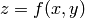

pyoptools.raytrace.surface¶
Module that defines all the clases that describe the optical surfaces
Class List¶
Available Classes¶
- class pyoptools.raytrace.surface.Surface(double reflectivity=0., shape=Circular(radius=10.))¶
Surface is an abstract superclass for all optical surface objects. This class defines an API that all subclasses must support.
All Surface subclasses share the attributes reflectivity, and shape, that are defined as follows:
reflectivity Float point number between 0 and 1. 0 indicates a completely transparent surface, 1 a completely reflective surface. A value between are beam spliters. shape Instance of the Shape, that indicates the surface’s aperture shape. Each surface stores a hit_list, so the ray impact information can be obtained. This list records the point of impact in the surface reference system, and a pointer to the hitting ray so intensity, wavelength, and other information about the ray can be retrieved. The reset method, clear this lists.
AVAILABLE METHODS
- distance(self, Ray iray)¶
Distance propagated by a ray until intersection with a surface.
This method returns the distance propagated by a ray since its origin and its point of intersection with a surface.
Args:
- iray
- Incident ray, iray must be in the coordinate system of the surface
Returns:
A tuple (distance,point_of_intersection, surface), where:
- distance
- The distance from the ray origin to the point of intersection with the surface
- point_of_intersection
- The point of intersection using the coordinate system of the surface
- surface
- a pointer to the surface
- distance_s(self, Ray iray)¶
Distance propagated by a ray until intersection with a surface.
This method returns the distance propagated by a ray since its origin and its point of intersection with a surface. This method returns positive and negative distances, and does not check for apertures.
Arguments:
iray – incident rayiray must be in the coordinate system of the surface
Return value:
A tuple with the distance, the point of intersection using the coordinate system of the surface, and a pointer to the surface (distance,point of intersection, surface)
- int_nor(self, Ray iray)¶
Point of intersection between a ray and a surface and the normal.
Method that returns the point of intersection between a surface and a ray, and the vector normal to this point. I must return a tuple of the form ((ix,iyi,z),(nx,ny,nz)), where ix,iy,iz are the coordinates of the intersection point, and nx,ny,nz are the components of the vector normal to the surface.
Arguments:
iray – incident ray in the coordinate system of the surface.This method uses surface.intersection, surface.normal, and surface.shape.hit
- intersection(self, Ray iray)¶
Point of intersection between a ray and a surface.
This method returns the point of intersection between the surface and the ray. This intersection point is calculated in the coordinate system of the surface.
If there is not a point of intersection ie: ray is outside of the element aperture, it must return (numpy.inf,numpy.inf,numpy.inf)
Arguments:
iray – incident ray
iray must be in the coordinate system of the surface
Returns:
A vector [x,y,z] containing the coordinates of the point of intersection between the ray and the surface. If there is no intersection returns [Inf, Inf, Inf].
Note
This method does not need to be overloaded. Overload surface._intersection() instead.
- normal(self, int_p)¶
Normal vector at the point ip.
This method returns the normal vector at a specific intersection point, given by ip. The normal vector must be normalized.
This method must be overloaded in all Surface subclases. It contains the geometric specific code.
Arguments:
iray – incident ray in the coordinate system of the surface.
Returns:
An array [dx,dy,dz] indicating the vector normal to the surface
- polylist(self)¶
- propagate(self, Ray ri, double ni, double nr)¶
Method to calculate the ray refracted on a surface.
This method calculates the ray refracted (or rays refracted and reflected)on a surface.
Arguments:
ri – incident ray
ni – refraction index in the incident media n.
nr – refraction index in the refracted media
ri must be in the coordinate system of the surface
- pw_cohef(self, ni, nr, ilimit, slimit, step, order, rsamples, zb)¶
Method to generate the taylor polinomial coheficients that can be used to obtain the phase and intensity for different plane wave inclinations.
- Notes:
- The pupil is normalized to the radius of the lens
- This method asumes a circular shaped pupil
- The phase is returned as an optical path
- The intensity is normalized to 1
Arguments:
ni,nr Refraction index from the incident and refracted sides ilimit Inferior limit for incidence angle of the plane wave in radians slimit Superior limit for incidence angle of the plane wave in radians step Step to be used to generate the interpolation data order Order of the Taylor interpolation used rsamples Tuple containing the number of ray samples to be used in each direction zb Z position of the plane where the measurementas are made. The origin is the vertex of the surface. If None, an estimate position is taken.
- pw_propagate(self, Ray ri, ni, nr, rsamples, shape, order, z)¶
Method to calculate wavefront emerging from the surface
This method calculates the wavefront emerging from the optical surface when illuminated by an unity amplitude plane wave. The k vector of the incoming PW is given by the direction of ri. The wavelength of the PW is given by the wavelength of ri. The origin of ri is not used at all.
Arguments:
ri – surface incident ray
ni – refraction index in the incident media n.
nr – refraction index in the refracted media
rsamples – number of rays used to sample the surface
shape – shape of the output wavefront
order – order of the polynomial fit
z – Z position of the input and output plane. The origin is the surface vertex
ri must be in the coordinate system of the surface Note: The ray comes from the negative side. Need to change this
- pw_propagate1(self, Ray ri, ni, nr, rsamples, isamples, knots)¶
Method to calculate wavefront emerging from the surface
Note
This method needs to be checked, because the incoming plane wave has not a constant intensity. The ray distribution is affected by the surface topography. it is better to use the slow version pw_propagate.
This method calculates the wavefront emerging from the optical surface when illuminated by an unity amplitude plane wave. The k vector of the incoming PW is given by the direction of ri. The wavelength of the PW is given by the wavelength of ri. The origin of ri is not used at all.
The input and output planes are located at z=0 in the surface coordinated system.
Note: this method needs to be checked, because the incoming plane wave has not a constant intensity. The ray distribution is affected by the surface topography. it is better to use the slow version pw_propagate1.
Note: The ray comes from the negative side. Need to change this
Arguments:
ri – isurface.pyncident ray
ni – refraction index in the incident media n.
nr – refraction index in the refracted media
ri must be in the coordinate system of the surface
- pw_propagate_list(self, Ray ri, ni, nr, rsamples, z)¶
Method to calculate wavefront emerging from the surface
This method calculates samples of the wavefront emerging from the optical surface when illuminated by an unity amplitude plane wave. The k vector of the incoming PW is given by the direction of ri. The wavelength of the PW is given by the wavelength of ri. The origin of ri is not used at all.
The returned value is a list containing the x,y coordinates of the ray list in the output surface, and the optical path at such point.
To create an output matrix, this values must be interpolated.
Arguments:
ri – incident ray
ni – refraction index in the incident media n.
nr – refraction index in the refracted media
rsamples – number of rays used to sample the surface (Tuple)
z – Z position of the input and output plane. The origin is the surface vertex
ri must be in the coordinate system of the surface Note: The ray comes from the negative side. Need to change this
- reset(self)¶
Remove information from the hit_list
- topo(self, x, y)¶
Method that returns the topography of the surface
The matrix returned is . This method mus be overloaded in all subclases of Surface.
- wf_propagate(self, wf, ni, nr, samples, shape, knots)¶
Method to calculate wavefront emerging from the surface
This method calculates the wavefront emerging from the optical surface when illuminated by an arbitrary wavefront.
The input and output planes are located at z=0 in the surface coordinated system.
Arguments:
wf – Field instance containing the incoming wavefront
ni – refraction index in the incident media n.
nr – refraction index in the refracted media.
samples – Tuple containing the number of rays used to sample the field.
shape – Tuple containing the shape of the output field
- class pyoptools.raytrace.surface.Cylindrical(curvature=0., *args, **kwargs)¶
Class to define cylindrical surfaces.
Cylindrical is a class to define cylindrical optical surfaces, with an aperture given by the shape attribute.
To define the cylindrical surface you should pass the size of the aperture, and the radius of curvature of the cylinder.
The vertex of the surface is located at the origin of coordinates (0, 0, 0).
Example:
>>> cs=Cylindrical(shape=Rectangular(size=(10,20)),curvature=0.15)
See Surface documentation for other options
AVAILABLE METHODS
- normal(self, IP)¶
Normal vector at the point ip.
This method returns the normal vector at a specific intersection point.
This method is overloaded from the superclass Surface.
- topo(self, x, y)¶
Method that returns the topography of the surface
The matrix returned is z=f(x,y). This method is overloaded from the superclass Surface.
- class pyoptools.raytrace.surface.Plane(*args, **kwargs)¶
Class to define a plane surface.
Description:
Plane is a class to define rectangular plane surfaces. The surface shape is given by the shape arrtibute
Example:
>>> ps=Plane(shape=Rectangular(size=(25,15)))
AVAILABLE METHODS
- normal(self, ri)¶
Method that returns the normal to the surface
- topo(self, x, y)¶
- class pyoptools.raytrace.surface.Spherical(curvature=0., *args, **kwargs)¶
Class to define spherical surfaces.
Spherical is a class to define spherical optical surfaces.
To define the spherical surface you should pass the shape of the aperture, and the radius of curvature of the sphere.
The vertex of the surface is located at the origin of coordinates (0, 0, 0) and the aperture is centered also about the origin
Example:
>>> cs=Spherical(shape=Circular(radius=60),curvature=0.15)
See Surface documentation for other options
AVAILABLE METHODS
- normal(self, ip)¶
Return the vector normal to the surface
This method returns the vector normal to the sphere at a point int_p=(x,y,z).
- topo(self, x, y)¶
Returns the Z value for a given X and Y
This method returns the topography of the spherical surface to be used to plot the surface.
- class pyoptools.raytrace.surface.ArrayDetector(size=(10, 10), *args, **kwargs)¶
CCD like detector surface.
Description the ArrayDetector class acts similar as a real CCD device. It holds a list of the coordinates of the rays that hits it.
Example of a CCD:
>>> cs=ArrayDetector(size=(10,10))
AVAILABLE METHODS
- get_color_histogram(self, size=(256, 256))¶
Method that returns the number of ray impacts per unit of area of the detector. It simulates a color image.
Parameter:
- size
- Size of the detector in pixels. The phisical size of the detector is given at the surface creation.
- get_histogram(self, size=(256, 256))¶
Method that returns the number of ray impacts per unit of area of the detector.
Parameter:
- size
- Size of the detector in pixels. The phisical size of the detector is given at the surface creation.
- class pyoptools.raytrace.surface.Aperture(ap_shape=None, *args, **kwargs)¶
Class to define a surface with an aperture
This class is used to define stops in the optical system. It receives two parameters.
ARGUMENTS:
shape It is a subclass of Shape, and defines the external shape of the stop ap_shape It is a subclass of Shape, and defines the internal shape of the stop (the aperture shape). EXAMPLE
Creation of an aperture surface:
ap=Aperture(shape=Rectangular(size=(60,60)),ap_shape=Circular(radius=2.5))
Note: To create an stop component, use the Stop class from the comp_lib module. It creates the aperture surface and encapsulate it in an component that can be used in a System.
AVAILABLE METHODS
- propagate(self, Ray ri, double ni, double nr)¶
The OptSurf.propagate is overloaded so it can be decided if the rays continue propagating or not.
Warning: This surface only checks if the ray continues or not. It does not calculate refraction or reflection. It must not be used to create lenses or mirrors.
- class pyoptools.raytrace.surface.TaylorPoly(cohef=(0, 0, 0), *args, **kwargs)¶
Class to define surfaces described by a Taylor polynomial
Description
The TaylorPoly class is used to define surfaces that can be described using a Taylor polynomial.
To define an TaylorPoly surface you should pass the shape of the aperture, and a coefficient matrix.
The coheficient matrix is a numpy matrix, that holds information about the coheficients of the polynomial.
cohef= [[x0y0, x1y0, x2y0,...,xmy0],
[x0y1, x1y1, x2y1,...,xmy1],
[x0y2, x1y2, x2y2,...,xmy2],
[ ... , ... , ... ,..., ... ],
[x0yn, x1yn, x2yn,...,xmyn]]
using this coheficients, the polynomial is defined as:
p(x,y)= x0y0+x1y0*X + ... + x0y1*Y +x1y1*X*Y+...+ xmyn*X^m*Y^n
Example:
>>> cs=TaylorPoly(shape=Rectangle(size=(5,5)), cohef =[[0,1],[1,2]])
AVAILABLE METHODS
- eval_poly(self, x, y)¶
- normal(self, int_p)¶
Return the vector normal to the surface
This method returns the vector normal to the polynomical surface at a point int_p=(x,y,z).
Note: It uses x and y to calculate the z value and the normal.
- topo(self, x, y)¶
Returns the Z value for a given X and Y
This method returns the topography of the polynomical surface to be used to plot the surface.
- class pyoptools.raytrace.surface.Cylinder(radius=10., length=10., *args, **kwargs)¶
Class to define cylinder shaped surfaces.
Description:
Cylinder is a class to define a tube or a hollow cylinder surface.
To define the cylinder surface you should pass the radius of the cylinder, and its length
The center of the cylinder is located at the origin of coordinates (0, 0, 0) and its length is parallel to the Z axis.
Example:
>>> cs=Cylinder(radius=5.,length=10.)
See Surface documentation for other options
AVAILABLE METHODS
- intersection(self, Ray A)¶
Point of intersection between a ray and the cylinder
This method returns the point of intersection between the surface and the ray. This intersection point is calculated in the coordinate system of the surface.
iray – incident rayiray must be in the coordinate system of the surface
Note: Because of the way the cylinder is defined, it does not use shapes to define its boundary, for that reason, the intersection method and not the _intersection method was overloaded.
- normal(self, int_p)¶
Normal vector at the point int_p.
This method returns the normal vector at a specific intersection point, given by int_p.
- polylist(self)¶
Because this is a closed surface, the method had to be overloaded
- class pyoptools.raytrace.surface.Aspherical(Ax=0., Ay=0., Kx=0., Ky=0., poly=None, *args, **kwargs)¶
Class that defines a high order aspherical surface
An aspherical surface is defined as:
Z=(Ax*x**2+Ay*y**2)/(1+sqrt(1-(1+Kx)*Ax**2*x**2-(1+Ky)*Ay**2*y**2))+ poly2d()
The poly2d is defined by a array in the same way as it is defined in the TaylorPoly Class
- Example
>>> cs=Aspherical(shape=Rectangle(size=(5,5)),Ax=.5,Ay=.3,Kx=.1, Ky=.1\ poly =poly2d((0,1,1)))
AVAILABLE METHODS
- normal(self, int_p)¶
Return the vector normal to the surface
This method returns the vector normal to the asphere at a point int_p=(x,y,z).
Note: It uses x and y to calculate the z value and the normal.
- topo(self, x, y)¶
Returns the Z value for a given X and Y
This method returns the topography of the aspherical surface to be used to plot the surface.
- class pyoptools.raytrace.surface.RPPMask(poly2d phm=poly2d((0,0,0,0,0,0)),M=[1],*args, **kwargs)¶
Class to define a reflective plane phase mask.
Description:
RPPMask is a class to define difractive plane surfaces. If reflectivity is 1 the gratting is reflective, if it is 0 the gratting is transmissive. If it is between 0 and 1, both transmitted and reflected diffracted rays are shown.
The surface shape is given by the shape arrtibute
The phm attribute is a poly2d instance, that contains the polinomial describing the phase modulation of the gratting. The X and Y input values of the polynomial are in microns.
Example:
>>> g=RPPMask(shape=Rectangular(size=(10,10)), phm=poly2d([0,2*pi/15.,0]),M=[1])
This is a 10 mm x 10 mm linear gratting that has a fringe each 15 microns
AVAILABLE METHODS
- normal(self, ri)¶
Method that returns the normal to the surface
- propagate(self, Ray ri, double ni, double nr)¶
Method that calculates the propagation of a ray through a diffraction gratting.
This method uses all the units in millimeters
- topo(self, x, y)¶